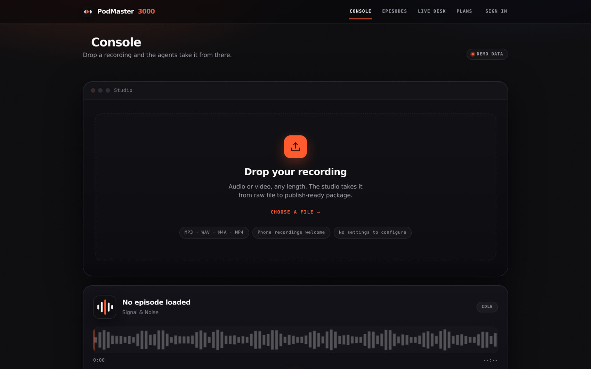
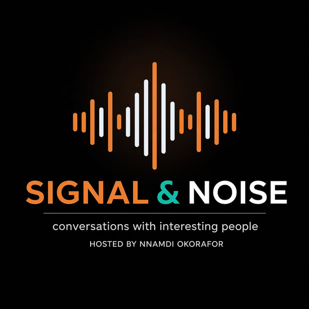
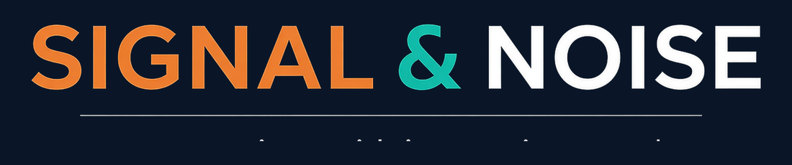
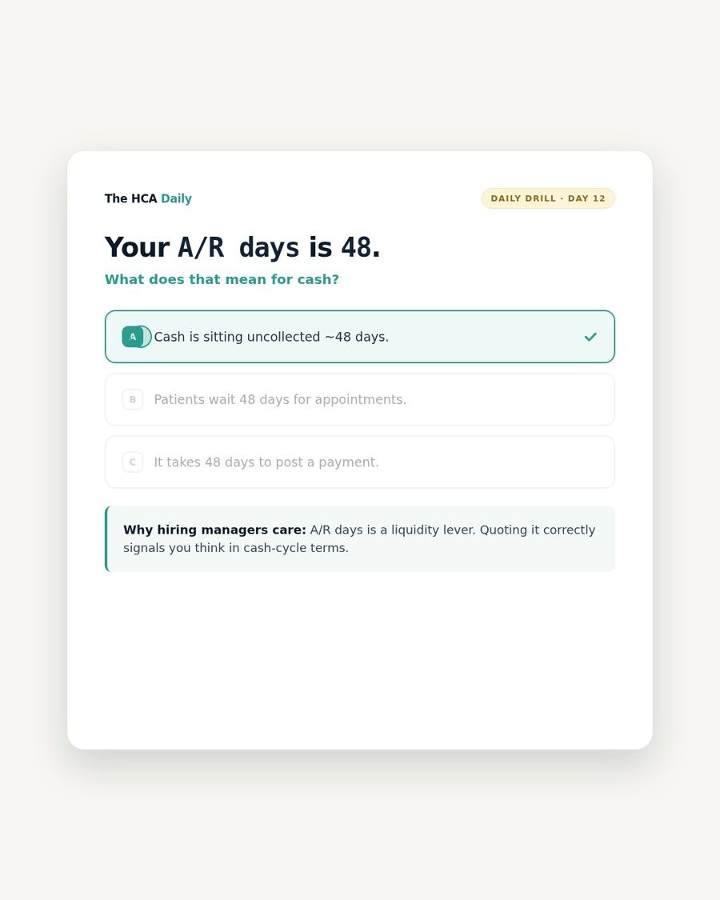

Products
Three things I built that run without me.
One takes a raw recording to a publish-ready package. The other runs an operating cadence from a phone. Both are in daily use — not concepts.
Product 01 — Podcast operations
PodMaster3000
An AI podcast studio. Drop in a recording — audio or video, any length, including phone audio — and the pipeline takes it from raw file to publish-ready package with no settings to configure.
- PipelineTranscribe → edit → master → QC → clips
- Release gateQC hard-fail blocks publish. Not overridable by API, UI, or agent.
- IsolationPer-user media paths; traversal attempts rejected
- Built forNon-engineers — “no settings to configure”
- StatusFree beta — 2 episodes/month
Being straight about the commercial state: this is a free-only beta while billing stays switched off. It’s real, it’s running, and people can use it today — I’m simply not selling seats yet.

The studio console. Drop a recording; the agents take it from there.

Signal & Noise — the show it produces.

Brand system, designed in-repo.
Product 02 — Agent operations
A Telegram-driven agent harness
An operations harness where every function of a business runs as an isolated agent you talk to from Telegram. You send a message; the agent has memory, tools and a schedule, and it acts.
- InterfaceTelegram — DMs and group channels
- Profiles15 isolated agents, each with its own memory, skills and tool access
- Schedule12 recurring jobs across 7 profiles
- ToolsBrowser automation, email, files, shell, APIs
- AuthorityOwners approve; agents execute. Nothing moves money unattended.
This is the harness I run my own operations on — the same one that produced the page you’re reading, from a phone, over a weekend.
How the harness is wired. Diagram — the interface itself is a Telegram thread.
Product 03 — Healthcare admin fluency
The HCA Daily
A five-minute daily drill that teaches early-career healthcare administration students the language hiring managers actually interview in — wRVUs, days in A/R, no-show rates. Fluency beats years on a résumé.
- FormatOne metric, one tap, one line on why it matters — 5 min/day
- MethodRetrieval practice and spaced repetition
- CurriculumRésumé metrics · Operational vocabulary · LinkedIn visibility · Interview delivery
- Trained byDr. Ashley Hussain-Okorafor, DBA — former lecturer and hiring-side administrator
- Reach6,000+ healthcare leaders
- PricingInterview Answer Vault $27 one-time · full Career Accelerator
This one is live and selling — a free 90-second Scorecard leads into paid products. Of the three, it's the furthest along commercially.

The daily drill. The product is the mechanic — answer, then read why it matters.
Dr. Ashley Hussain-Okorafor, DBA
Former lecturer and hiring-side administrator — the curriculum is built from the other side of the interview table.
Trained by someone who made the hiring decisions.
Want to see either one running?
I’ll walk you through the studio, the harness, or both — and tell you honestly what’s finished and what isn’t.